is a finitary condition, and this is the reason the theory has compactness statements at all.
is a finitary condition, and this is the reason the theory has compactness statements at all.The convex hull
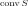
of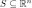
is the intersection of all convex sets containing . A convex combination
of
. A convex combination
of 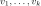
is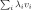
with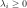
and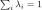
.
An intersection of convex sets is convex, so is the smallest
convex set containing ; and is exactly the set of
convex combinations of finitely many points of .
If each  is convex and
is convex and
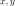
lie in all of them, then so does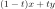
for![\(t \in [0,1]\)](m/a9a540d86c05581319fb25b9343811d50152c100.svg) ; hence the intersection is
convex, and by construction it is contained in every convex set
containing .
; hence the intersection is
convex, and by construction it is contained in every convex set
containing .
Let  be the set of convex combinations of points of . Any
convex set containing contains : by induction on
be the set of convex combinations of points of . Any
convex set containing contains : by induction on  , if
, if
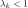
then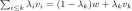
with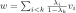
a convex combination of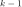
points. So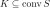
. Conversely is itself convex – a convex combination of two convex
combinations is one, after collecting coefficients, which are again
non-negative and sum to  – and it contains , so
– and it contains , so
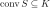
.
Every point of , for , is a convex
combination of at most  points of .
points of .
Let
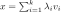
be a convex combination with minimal, all 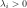
, and suppose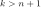
. The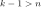
vectors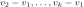
lie in , so they are dependent: there are
, so they are dependent: there are 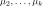
, not all zero, with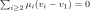
. Putting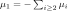
gives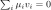
and , with some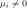
and therefore some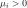
.Let
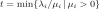
, attained at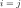
. Then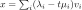
, the new coefficients are non-negative – for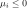
obviously, and for by the choice of – they sum to , and the
– they sum to , and the
 -th vanishes. This is a convex combination of of the
points, contradicting minimality. Hence
-th vanishes. This is a convex combination of of the
points, contradicting minimality. Hence 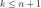
.If is closed and bounded, so is .
Boundedness is clear, a convex combination of points of norm at most
 having norm at most . For closedness, let
having norm at most . For closedness, let
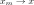
with . By the theorem, write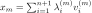
with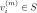
and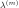
in the set of non-negative vectors summing to (padding with repeated points if fewer than
are needed). Both the 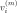
and the range over closed bounded sets, so by Bolzano-Weierstrass, applied finitely many times, a subsequence has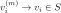
and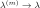
with summing to. Passing to the limit gives 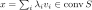
.
Without Caratheodory the corollary is not available in this form: the
number of points in the combinations would grow with  and there
would be no fixed finite-dimensional compact set to extract a
convergent subsequence from. That is the sense in which the theorem is
about finiteness rather than about counting.
and there
would be no fixed finite-dimensional compact set to extract a
convergent subsequence from. That is the sense in which the theorem is
about finiteness rather than about counting.